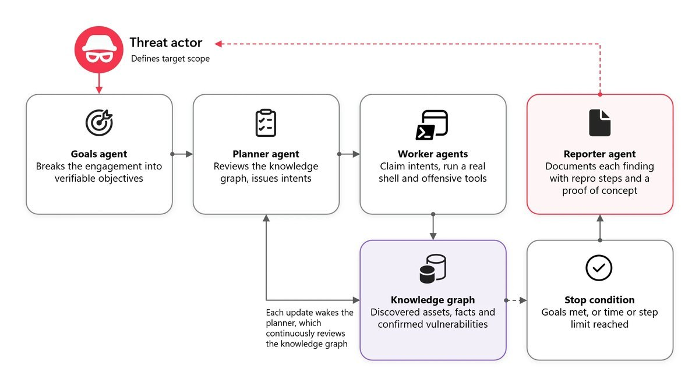
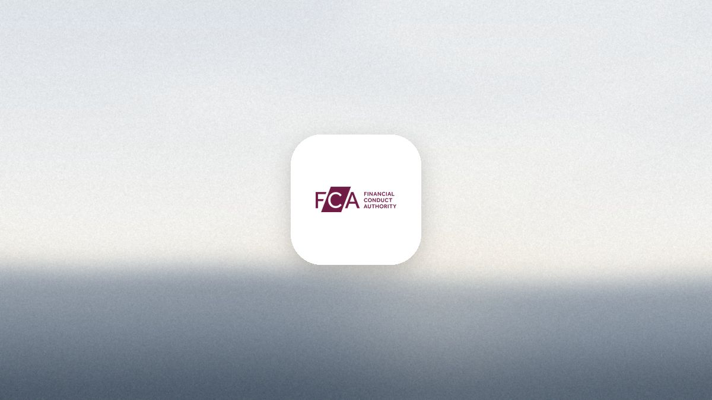

AI
Brief
Wednesday edition
Cloudflare sites get a search box for AI agents
Also: AI labs settle decades-old math questions, ChatGPT puts chat and agent work on one meter, state-backed hackers adopt an attack agent, and the UK sets rules for agents that move money.
What matters today
Sites get agent search
Cloudflare launches Search for Agents.
- One switch: Cloudflare indexes the site and opens a search address on its own domain; every page tells visiting agents where to find it.
- Open to all customers, Free plan included with limits, marked beta in the dashboard. Agents get back page text, not a written answer.
Why it mattersAgents stop reading a site page by page and ask it directly, like a person using a search box. Being easy for agents to search becomes part of being found, and a free switch makes it normal.
AI settles old math questions
OpenAI posts a proof of how fast matrices can be multiplied.
- The claim: the exponent of matrix multiplication is exactly 9/4, a question open since the late 1960s; the paper is dated November 24 and not yet reviewed by others.
- Google too: its Cogentic system posted six papers on November 25, including proven factoring methods; Scott Aaronson sees nothing in them that matters for encryption.
Why it mattersModels now answer research questions experts expected to take decades, and labs post the work as files, not launches. The hard part moves from finding answers to checking them.
ChatGPT gets one usage limit
OpenAI starts merging ChatGPT's Chat and Work into one app.
- One meter: chat and agent work draw on a single usage allowance; answers from the Instant model stay unlimited and do not count.
- Rollout: a small group of Pro users since November 24, more users in December; OpenAI says a small fraction of its heaviest users may hit limits sooner.
Why it mattersChat and agent work stop being two products with two limits. A long agent task now eats into everyday chat, so AI plans will be judged by how much work they buy, not which features they list.

State hackers run attack agents
Microsoft says state-sponsored hackers now use the ARTEX attack agent.
- What is new: state-sponsored groups such as Salt Typhoon, Crystal Typhoon and Onyx Sleet have added it, alongside criminal groups.
- How it works: agents plan, attack and report on their own, reaching privileged access in minutes; it runs on any model, so no one AI provider can switch it off.
Why it mattersAttacks now move at agent speed on any model, so a provider's safety rules do not stop them. Defenses that spot machine-speed behavior and respond on their own become the baseline.

UK sets rules for money agents
The UK's financial regulator sets out what it expects of AI agents.
- November 24 update: tech firms whose agents make payments, arrange credit or give advice in the UK may need FCA authorisation, whatever they call themselves.
- For banks: they stay responsible for agents they use, and should decide whether to accept payments an AI agent instructs.
Why it mattersA regulator now judges an agent by what it does, not by who built it. An agent that moves money in the UK can make its maker a financial firm, so payment and advice features carry licence costs.
Also in the news
- Muse and Amazon: Amazon is reportedly in talks with Meta to let the Muse agent shop its store; Amazon worries about ad revenue that depends on people seeing ads.
- Microsoft Agent Framework: its GitHub repository stays offline after Python package versions 1.26.1 and 1.26.2 were put on PyPI on November 17 with code that steals credentials.
- VS Code 1.148: agents can keep the computer awake while they work (preview) and get their own Dev Container without a config file (experimental).
- Copilot code review billing: from December 30, reviews for licensed members bill to the organization unless admins choose otherwise.
- Mellum2.1 Instruct: JetBrains' open 12B coding model, 2.5B active, answers without its reasoning, for quick agent steps and local use.
- Biomni Swarm: Phylo's beta, dated November 24, has one lead agent split biomedical research across a team of thousands of agents that check each other's work.
- Hurdle: Together AI open-sources a library that runs Claude Code and Codex on tasks against your API and docs and scores each run.
- Vercel Workflow 5.8: a rebuilt engine cuts step-to-step delay from 85 ms to 7 ms at p75, which shortens turns for long-running agents.
- Amazon Transcribe Turbo: speech-to-text in public preview; for voice agents it tells when a caller is done from words and tone, not silence.
- Sakana Namazu Small: a 30-billion-parameter model trained on Nvidia's Nemotron 3 Nano base; Sakana's figures: 73.5 on the BrowseComp web search test, against 29.3 for the base.
- Qwen Go calls for you: Alibaba opens free AI phone calls for restaurant bookings, courier questions and lost items, including scheduled calls.
- Social reasoning test: Google Research checks whether assistants can work out a person's hidden motive from a user's account, using simulations with known answers.
- SpaceX Starmind: the FCC authorizes up to 1 million satellites carrying AI chips, its first approval of a full constellation of AI data center satellites.
- Character.AI chat data: 42 state attorneys general oppose the bankrupt company's plan to auction chats from over 21 million US accounts; the auction is set for December 1.